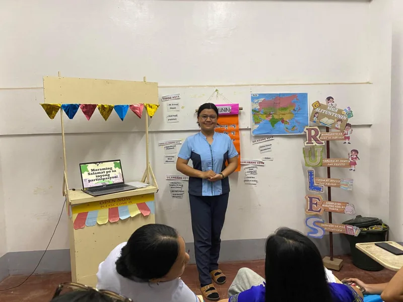
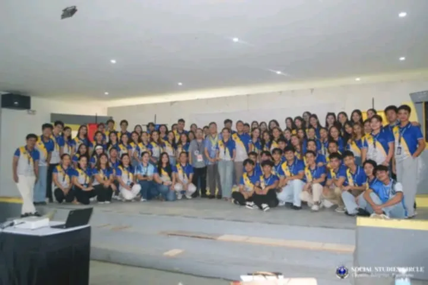
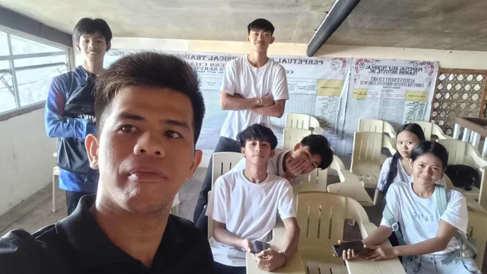

Jasmine Bracamonte
Taking the
I'm an enthusiastic and dedicated second-year Bachelor of Secondary Education Major in Social Studies student at Samar State University. I am passionate about social sciences, education, and leveraging technology to create engaging learning experiences.
Do you want to know more about me?
I lived in barangay Cagtutulo, Tarangnan, Samar. I am also an SK official, serving as the Secretary.
My hobbies are watching Korean dramas and TikTok. When I'm not in front of a screen, I usually draw and cook.
What I am good at
MS Word
Documentation, drafting and editing research papers and reports.
MS PowerPoint
Creating and designing slides for academic presentations.
MS Excel
Data entry, organization, and basic spreadsheet management.
Canva
Graphic design for posters, infographics, and creative layouts.
Google Sheets
Collaborative data tracking and spreadsheet management online.
ChatGPT
AI-assisted research, content writing, and problem solving.
My experiences

2026 (Present)Demo Teaching
SSU: Deparment of EducationConducted a teaching demonstration at the SSU Department of Education, including the preparation of instructional materials and a formal presentation
Community Service
Barangay CanlapwasOur ssection imerse in a community service in barangay Canlapwas. We distribute pamphlets and poster regarding to waste management in the community.

2026 (Present)Seminar Workshop
SSU, function roomThe Social Studies Faculties conducted a seminar workshop regarding how to formulate a lesson plan for social studies students

2023 - 2024Joint Delivery Voucher Program (JDVP)
PHTTIA tuition assistance program for Grade 12 learners in public Senior High School Technical-Vocational-Livelihood (SHS-TVL) tracks. It allows students to take specialized training at qualified private institutions or technical vocational institutions (TVIs) to address school resource gaps.
My Learning Journey
A collection of personal reflections on technology, teaching, and growth as a pre-service educator.
I recently designed traditional instructional materials, such as physical charts and tactile models, for a Social Studies lesson. Initially, I felt it might be tedious compared to the ease of digital tools, but I actually found the hands-on creation process quite fulfilling. The positive aspect was seeing how these tangible tools can immediately engage students without relying on internet connectivity, though they obviously lack the dynamic, real-time updates of digital media.
Analyzing this, I realized that conventional materials remain foundational and highly accessible, especially in resource-constrained educational environments where digital equity is an issue. I concluded that physical materials are not obsolete but rather a crucial component of a versatile teaching toolkit. Moving forward, I will ensure I deliberately balance high-tech tools with these reliable non-digital materials to guarantee inclusivity in my future classrooms.
During this unit, I explored various ICT tools like interactive quizzes and multimedia presentation software to enhance my instructional design. I felt slightly overwhelmed by the sheer volume of available applications but excited by their potential to make complex topics more accessible and engaging. Integrating these tools proved highly effective for visual storytelling, yet I noticed that selecting the right tool requires careful alignment with specific learning objectives rather than just using technology for its own sake.
The experience highlighted that pedagogy must dictate the technology, not the other way around. I concluded that my primary focus should always be on the learning outcome rather than the flashiness of the app. In future lesson planning, I will strictly evaluate an ICT tool's pedagogical value using frameworks like the TPACK model before integrating it into my teaching modules.
The task involved curating my academic journey and instructional artifacts into a structured e-portfolio using a website builder. I felt a strong sense of pride assembling my work and seeing my progress, though I was initially anxious about the technical web-design aspects and formatting. Compiling this portfolio was an excellent way to visually track my growth as a pre-service teacher, allowing me to see the clear connections between the theories I've learned and how I will practically assess my future students.
It became clear that an e-portfolio is not just a static repository for grades, but a dynamic tool for continuous self-reflection and professional branding. I plan to regularly update this e-portfolio even after this course ends, treating it as a living document of my evolving teaching philosophy and technological proficiency.
We engaged with various collaborative platforms, such as shared online documents and digital whiteboards, to facilitate academic group work. I felt energized collaborating with peers in real-time, although coordinating schedules and navigating simultaneous edits was occasionally frustrating when versions clashed. The experience highlighted how these tools break down geographical barriers and foster collective intelligence, which is particularly useful when coordinating complex group projects like our "Piso at Pananaw" economics magazine.
However, I realized that having the technology is not enough; clear communication protocols are essential to prevent confusion and duplicated efforts in asynchronous and synchronous digital spaces. In future group endeavors, I will establish clear digital etiquette, organize file structures, and designate specific role assignments early on to maximize the efficiency of these collaborative technologies.
This topic required me to critically assess my ability to find, evaluate, and communicate information ethically in digital environments. I felt challenged to examine my own online habits and confront the inherent biases in the media I consume on a daily basis. While I am generally comfortable navigating digital spaces, systematically evaluating the credibility and nuanced perspectives in online media proved to be a complex but vital academic exercise.
I concluded that digital literacy goes far beyond basic technical operation; it is fundamentally about critical thinking, information hygiene, and responsible digital citizenship. I am committed to continuously refining my own media literacy skills and will make it a priority to teach my future students how to critically cross-reference online information to navigate an era prone to misinformation.
Contact Me
If you have any further questions or concerns, feel free to reach out to me.
Location
Brgy. Cagtutulo, Tarangnan, Samar